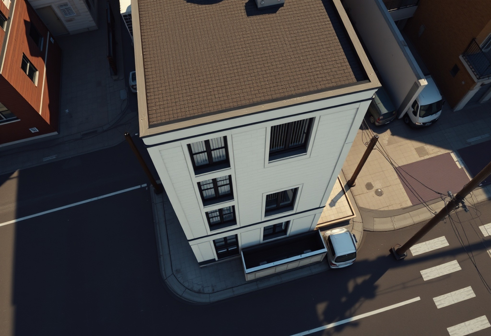
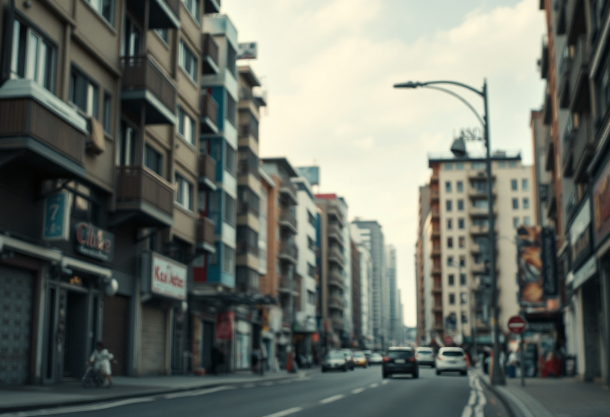
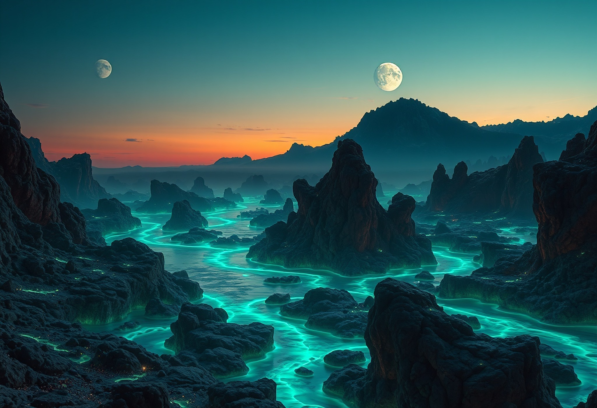
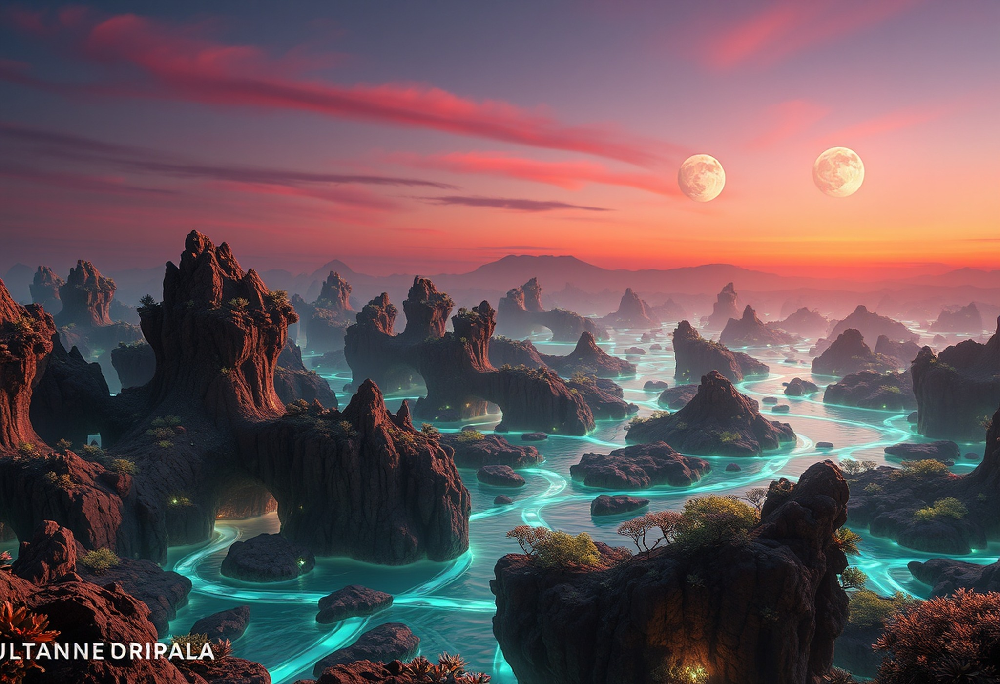

6 images sur 54 — Flux schnell 1216×832 → 2048×1400 · lexique 34 + styles 20 · Image-generator →

High-angle plongée view from above — lexique 35p

Telephoto compression — lexique
Three-point perspective — lexique

Tag WHAT — styles-starter 20p (même alien crépusculaire)

Tag WHAT — styles-starter